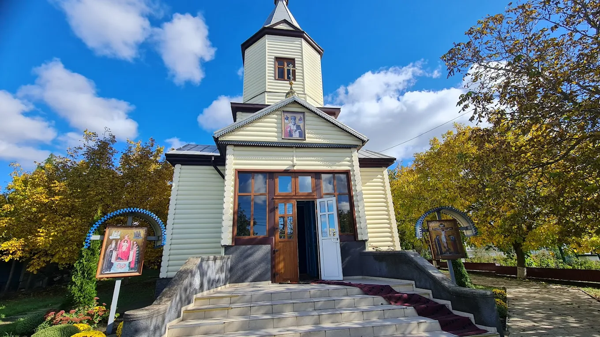
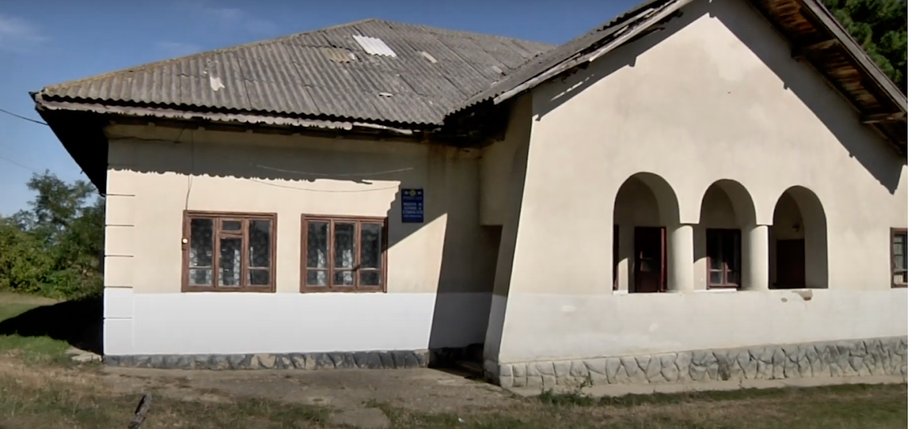
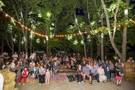

Explorează Iabloana
Biserica Ortodoxă Sfântul Ierarh Nicolae

Biserica din satul Iabloana, raionul Glodeni, este inima spirituală a unei comunități diverse, unde tradițiile ucrainene și moldovenești se împletesc sub cupola ortodoxiei. Cu hramul Sfântului Nicolae, lăcașul nu este doar un edificiu religios, ci un simbol al unității și rezilienței locale. De generații, biserica a rămas punctul de reper pentru cele mai importante momente din viața satului, păstrând vie identitatea culturală a zonei. Prin simplitatea și statornicia sa, ea reprezintă legătura neîntreruptă între trecutul istoric al Glodeniului și viitorul noilor generații.
Muzeul satului Iabloana

Muzeul de Istorie și Etnografie din Iabloana este instituția care conservă identitatea unică a satului, marcată de fuziunea culturilor moldovenească și ucraineană. Acesta adăpostește o colecție prețioasă de obiecte de cultură populară, de la unelte vechi și costume tradiționale, până la documente istorice ale comunității. Rolul muzeului depășește simpla expunere de obiecte; el este un spațiu educațional care leagă trecutul strămoșilor de viitorul tinerelor generații. Prin fiecare exponat, muzeul din Iabloana reușește să păstreze vie memoria colectivă și să celebreze diversitatea culturală specifică raionului Glodeni, fiind un adevărat simbol al continuității și respectului pentru rădăcini.
Parcul satului Iabloana

Parcul central din Iabloana, raionul Glodeni, este mai mult decât o zonă verde; este inima socială a satului. Acesta oferă un spațiu esențial pentru recreere, unde aleile liniștite și locurile de joacă adună laolaltă toate generațiile localnicilor. Punctul de reper al parcului este Monumentul Eroilor, care transformă acest loc de odihnă într-un simbol al memoriei istorice. În concluzie, parcul din Iabloana reprezintă un plămân spiritual și social, fiind locul unde natura, respectul pentru trecut și viața cotidiană a comunității se întâlnesc armonios.